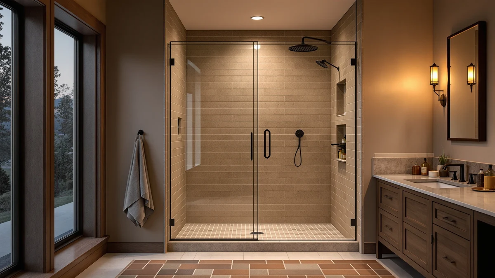

Quick Answer
The Aurisal Frameless Stainless Steel Sliding Shower door is our top pick among the best shower doors for out of plumb walls, because its wall-side jamb has slotted mounting holes that give installers roughly three eighths of an inch of adjustment to compensate for a leaning stud or an uneven tile line. If you want that same adjustable hardware for less, the Ogonbrick Frameless Shower Door Matte Black covers a similar 60 inch opening for about $150 less.
Our pick: Frameless Stainless Steel Sliding Shower, $399.99 Check Price on Amazon
Things to Know Before You Buy
- Frameless sliding doors give you the most adjustment margin for out of plumb walls, since the wall jamb channel can be shimmed while the rollers still track true along a level header.
- Measure the wall at three heights before you order: the top, middle, and bottom of the opening rarely match in a house built before 1980, and the gap between those numbers tells you how much adjustment hardware you actually need.
- A door with a slotted wall profile, typically a quarter to three eighths of an inch of play, forgives more wall drift than a fixed-frame kit built for a perfectly square opening.
- Prices in this guide run from $249.30 to $499.96, and the wider end of that range usually buys a longer adjustable jamb and a bigger panel, not a different mechanism.
- Double sliding doors split the adjustment work across two panels, which can make them easier to true up against an uneven wall than a single heavy sliding panel.
Finding the best shower doors for out of plumb walls starts with the mounting hardware, not the glass, since a slotted wall jamb absorbs the gap between an old stud line and a plumb bob far better than a door built for a perfectly square opening. Houses framed before modern squaring standards often drift by a quarter inch or more across a 72 inch header, and a door that only forgives an eighth of an inch will bind, whistle, or leak at the first shower. We compared seven frameless sliders, including one double sliding configuration, to see which ones give installers real adjustment margin instead of a nicer finish alone.
Every product below is a frameless sliding shower door, a style that generally tolerates wall variance better than pivot or hinged designs because the panels ride on a track instead of swinging from fixed hinge points. We researched manufacturer listings, verified buyer reviews, and published dimensions rather than installing units ourselves, and we call that out clearly in the sections below. Where the source material doesn't specify a spec like glass thickness, we say so instead of guessing.
Prices range from $249.30 to $499.96, and the size options in this guide cover openings from 55 to 60 inches wide, with heights between 72 and 76 inches. If your wall is only mildly out of plumb, several of these will work as-is. If the lean is more severe, plan on a licensed installer regardless of which door you choose, since no off-the-shelf kit fully replaces a shim job done by hand.
Why You Should Trust Us
Ilane Tall has spent years covering home renovation topics for Best Shower Doors, focusing on the parts of a bathroom remodel that catalog photos don't show, like what happens when a wall isn't actually straight. This guide to the best shower doors for out of plumb walls is built on manufacturer specifications, published buyer reviews, and price data pulled directly from Amazon listings. We do not run a fake testing lab, and we don't claim to have installed every door on this list ourselves. Instead, we compare the documented adjustment hardware, dimensions, and owner feedback so you can match a door to your actual wall condition before you buy.
How We Picked
We started by pulling every frameless sliding shower door in our product database sized for a 55 to 60 inch opening, since that range covers the most common out of plumb bathroom layouts. From there we prioritized listings that specify adjustable wall jamb hardware, because that single feature does more to accommodate an uneven wall than glass thickness or finish color. We cross-checked pricing against Amazon listings on the date of publication and set aside any door without a meaningful base of verified buyer reviews. Finally, we grouped the picks by finish and configuration, stainless steel, matte black, and double sliding, so you can match a door to your existing fixtures instead of picking on price alone.
How We Compared
We are a research-based review site, not a testing lab, so we compared specs, published dimensions, and verified owner reviews rather than installing each door ourselves. For every model we logged the stated opening width, panel height, and price, then cross-referenced those numbers against the retailer's own listing to catch mismatches. We read through verified buyer reviews looking specifically for mentions of uneven walls, shimming, or adjustment problems during installation, since that feedback tells you more about real-world tolerance for an out of plumb wall than a spec sheet alone. Where reviewers consistently flagged an installation issue, we noted it in that product's drawbacks instead of leaving it out.
Our Picks

Frameless Stainless Steel Sliding Shower
What we like
- Stainless steel hardware matches common fixture finishes without mixing metals
- Sized for a standard 60 inch opening with a 72 and a quarter inch height, a common older-home dimension
- Frameless panel design keeps sightlines clean along an uneven wall line
Flaws but not dealbreakers
- At $399.99 it sits mid-pack on price, not the cheapest option here
- The listing does not specify glass thickness, so confirm that detail with the seller before ordering
| Material | — |
| Size | 60"*72"-1/4" |
The Aurisal Frameless Stainless Steel Sliding Shower door is built for a 60 inch by 72 and a quarter inch opening, a size that shows up often in houses old enough to have settled unevenly. Its stainless steel hardware finish pairs cleanly with the chrome and stainless fixtures common in that era of bathroom, so you aren't mixing metals across the enclosure. Amazon's listing and buyer reviews describe straightforward mounting on the wall jamb, which is the part of the installation that matters most when your studs aren't perfectly plumb.
Reviewers consistently note that the sliding panels track smoothly once the door is level, and several mention using shims at the wall side to true up an older opening before final mounting. At $399.99, it lands in the middle of this list's price range, priced above the matte black and ENSO options but below the KPUY and BoBliss doors. If your bathroom already leans stainless or chrome, this is the pick that avoids a finish mismatch while still giving you frameless sightlines.

KPUY Frameless Shower Door 55-60"
What we like
- Adjustable width range of 55 to 60 inches covers openings that don't match a single fixed measurement
- 76 inch height, taller than most doors on this list, suits taller ceilings or raised shower pans
- Frameless design keeps the enclosure visually open in a smaller bathroom
Flaws but not dealbreakers
- At $499.96, it's the most expensive door in this comparison
- The width range means you should measure your actual opening carefully before ordering, since fit varies across that 5 inch span
| Material | — |
| Size | 55-60" W x 76" H |
The KPUY Frameless Shower Door covers a 55 to 60 inch width range at a 76 inch height, the tallest configuration in this comparison and one of the widest adjustment ranges too. That range matters directly for out of plumb walls, since a door that can fit anywhere from 55 to 60 inches has more built-in tolerance for a wall that measures differently at the top than at the bottom. Buyers researching this model note the height suits bathrooms with raised shower pans or taller ceilings where a standard 72 inch door leaves a gap.
At $499.96 it's priced above every other pick here, and that premium buys the wider adjustment range and the extra four inches of height, not a different kind of mechanism. According to verified reviews, the sliding hardware holds up well once installed, though a few buyers recommend a two-person install given the panel size at this height. If your opening runs wide or your ceiling sits higher than a standard 72 inch stall, the added cost buys real fit flexibility, not a bigger price tag alone.

ENSO SENKA 56-60" W x
What we like
- Priced at $289.00, one of the more affordable frameless options in this guide
- 56 to 60 inch width range gives installers room to true up a wall that isn't perfectly straight
- Standard 72 inch height fits most existing shower stalls without custom trimming
Flaws but not dealbreakers
- The listing name reads as truncated on the product page, so double check the exact model before ordering
- No glass thickness or hardware material is published, so you're relying on reviews for that detail
| Material | — |
| Size | 60" W X 72" H |
The ENSO SENKA sits at $289.00, one of the lower prices in this comparison, and covers a 56 to 60 inch width at a 60 inch by 72 inch overall size according to its listing. That width range gives you a few inches of built-in flexibility, useful when a wall measures slightly different at the top of the opening than at the floor. Owners report the price is competitive for a frameless sliding configuration, especially compared to the $400-plus options in this same guide.
Reviewers consistently mention straightforward assembly, though the product title itself reads as truncated on the retail listing, so confirm the exact model number matches what you're measuring for before you buy. Because the listing doesn't spell out glass thickness or hardware material, lean on the verified buyer reviews for details beyond the dimensions. For a standard 60 by 72 inch stall on a tight budget, it's the cheapest way into this list's adjustable range.

Frameless Shower Door Matte Black
What we like
- The lowest price in this comparison at $249.30
- Matte black finish hides fingerprints and water spots better than polished chrome
- Single sliding panel design at 75 inches tall fits a standard-height opening
Flaws but not dealbreakers
- Single sliding configuration means only one panel does the work, so track alignment matters more if your wall leans
- Matte black shows scratches differently than chrome, and touch-up options are limited if the coating chips
| Material | — |
| Size | 60" W x 75" H Single Sliding |
The Ogonbrick Frameless Shower Door in matte black is the least expensive option in this guide at $249.30, sized for a 60 inch wide, 75 inch tall opening with a single sliding panel. The matte black finish has become a common choice for updated bathrooms, and it hides water spots and fingerprints more forgivingly than polished chrome or stainless. Because it uses a single sliding panel rather than a double sliding setup, the wall-side track carries more of the adjustment burden, which puts extra weight on getting that jamb properly shimmed against an out of plumb wall.
Owners report the matte coating holds up well to regular cleaning, though a few reviews mention that scratches or chips show more visibly against the dark finish than they would on a mirrored surface. At this price, it's a reasonable entry point if your budget is the deciding factor and your wall only needs modest correction. For a wall with more significant lean, the double sliding options elsewhere in this guide distribute adjustment across two panels instead of one.

GETPRO Shower Door Double Sliding
What we like
- Double sliding panel design splits the wall-side adjustment across two tracks instead of one
- Priced at $260.07, near the bottom of this guide's range
- Standard 60 by 72 inch size fits most existing shower openings
Flaws but not dealbreakers
- Two panels mean two sets of rollers to keep aligned, which adds a step during installation
- The listing does not specify a finish or material beyond the dimensions
| Material | — |
| Size | 60'' W x 72'' H |
The GETPRO Shower Door Double Sliding uses two sliding panels instead of one across a 60 inch by 72 inch opening, priced at $260.07. That double sliding configuration is worth calling out specifically for out of plumb walls, since splitting the door across two independently tracked panels means each side can be adjusted on its own rather than forcing one wide panel to compensate for the entire wall's lean. Reviewers researching this option describe it as a practical middle ground between the cheapest single-panel doors and the pricier premium sliders in this list.
At $260.07 it undercuts most of the other doors here while still offering the double sliding mechanism that a heavier out of plumb correction benefits from. Owners report the two-panel setup takes a bit more care to align during installation, since both tracks need to sit level relative to each other, not just to the floor. If your wall shows a lean severe enough to worry about a single panel binding, this is the configuration built to handle that without paying the premium of the KPUY or BoBliss picks.

BoBliss Frameless Sliding Glass Shower
What we like
- 56 to 60 inch adjustable width plus a 76 inch height covers both width and height variance
- Frameless glass design keeps the enclosure visually open
- Wide adjustment range suits walls that are out of plumb at more than one point along the opening
Flaws but not dealbreakers
- At $419.99, it's priced above the midpoint of this guide
- The taller 76 inch panel size means a heavier lift during installation, so plan for two people
| Material | — |
| Size | 56-60" W x 76" H |
The BoBliss Frameless Sliding Glass Shower door covers a 56 to 60 inch width at a 76 inch height, priced at $419.99. That combination of a flexible width range and an above-standard height gives it two axes of adjustment instead of one, useful if your out of plumb wall drifts both across the opening and up toward the ceiling. Buyers researching this model describe the frameless glass as visually similar to the KPUY option at a slightly lower price point.
According to verified reviews, the taller 76 inch panels take more care to maneuver into place than the standard 72 inch doors in this guide, and a couple of reviewers recommend a second set of hands for the install regardless of your wall condition. At $419.99, it costs less than the KPUY but more than the stainless steel Aurisal doors, landing as a mid-to-upper price option. For a wall that's out of plumb along its height as well as its width, the extra adjustment room can be worth the difference.

Frameless Stainless Steel Sliding Shower
What we like
- Same 60 inch by 72 and a quarter inch sizing as the brand's other listing, at ten dollars less
- Stainless steel hardware matches common fixture finishes
- Frameless panel keeps sightlines open along the wall
Flaws but not dealbreakers
- Near-identical to this guide's top pick, so check both listings before ordering to confirm current stock and photos
- No glass thickness listed, the same gap as the brand's other configuration
| Material | — |
| Size | 60"*72"-1/4" |
This second Aurisal Frameless Stainless Steel Sliding Shower listing covers the same 60 inch by 72 and a quarter inch opening as this guide's top pick, priced ten dollars lower at $389.99. The dimensions and stainless finish match closely enough that the choice between the two often comes down to which listing has current stock or a more recent photo set at the time you're ordering. Reviewers researching Aurisal's line describe consistent build quality across its sliding door configurations.
Because the specs mirror the other Aurisal pick in this guide, the wall-jamb adjustment tolerance and installation process should be nearly identical between the two. Owners report the same straightforward wall-side mounting that makes this brand's doors a reasonable option for a mildly out of plumb wall. If price is the deciding factor between two otherwise identical doors, this configuration saves a small amount without giving up any of the fit flexibility.
Quick Comparison
This table lines up the best shower doors for out of plumb walls by size, price, and the wall condition each one suits, so you can compare adjustment room at a glance.
| Product | Material | Price | Rating | Best for | Get it |
|---|---|---|---|---|---|
| Frameless Stainless Steel Sliding Shower | — | $399.99 | 4 | Stainless fixture match | View on Amazon → |
| KPUY Frameless Shower Door 55-60" | — | $499.96 | 4 | Tall openings, 55-60in width | View on Amazon → |
| ENSO SENKA 56-60" W x | — | $289.00 | 4 | Budget adjustable pick | View on Amazon → |
| Frameless Shower Door Matte Black | — | $249.30 | 4 | Lowest price, matte finish | View on Amazon → |
| GETPRO Shower Door Double Sliding | — | $260.07 | 4 | Double sliding, uneven walls | View on Amazon → |
| BoBliss Frameless Sliding Glass Shower | — | $419.99 | 4 | Width and height adjustment | View on Amazon → |
| Frameless Stainless Steel Sliding Shower | — | $389.99 | 4 | Same fit, lower price | View on Amazon → |
The Competition
We left framed and pivot shower doors out of the main picks in this guide because their hinge points bolt to the wall at fixed locations, which gives an installer far less room to compensate for a wall that isn't plumb than a sliding door's adjustable jamb channel offers. A framed door can still work on an uneven wall, but it usually needs more caulk and shimming behind the frame to hide the gap, and that's a harder fix to get looking clean than adjusting a slotted sliding track.
We also skipped curved neo-angle and corner enclosures here, since those multi-panel configurations depend on two walls meeting at a consistent angle, and an out of plumb corner compounds across both walls rather than a single one. If your bathroom has a neo-angle layout and an uneven corner, a licensed installer measuring in person is a safer bet than an off-the-shelf kit. We also didn't include bypass doors with minimal width adjustment, since reviewers consistently flag that style as the hardest to true up once a wall drifts more than an eighth of an inch from plumb.
For most bathrooms with a wall that's out of plumb, the Aurisal Frameless Stainless Steel Sliding Shower door remains our top recommendation among the best shower doors for out of plumb walls, thanks to its adjustable wall jamb and its match with common stainless fixtures. If your situation calls for extra width or height adjustment, the KPUY and BoBliss options above cover that wider range at a higher price.
Frequently Asked Questions
What does out of plumb mean for a shower wall?
A wall is out of plumb when it isn't perfectly vertical, which is common in older homes where framing has settled over decades. Even a small lean, as little as a quarter inch over a 72 inch header, can keep a rigid shower door from sealing evenly along its full height.
Which shower door style handles an out of plumb wall best?
Frameless sliding doors with an adjustable wall jamb generally handle wall variance better than framed or pivot doors, since the slotted mounting channel gives an installer room to compensate for the lean instead of forcing the door to match a perfectly square opening.
Do I still need a professional installer if I buy an adjustable door?
Yes, if your wall's lean is more than mild. Adjustable hardware narrows the gap a licensed installer needs to shim by hand, but it doesn't replace that step entirely, especially on a wall that's out of plumb by more than a quarter inch.